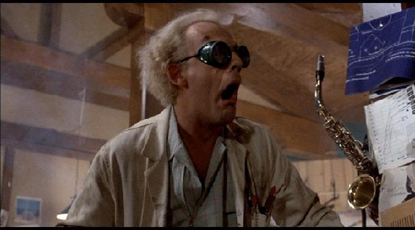
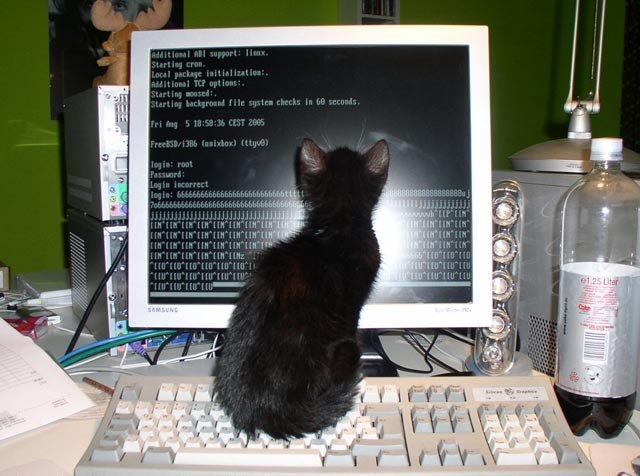
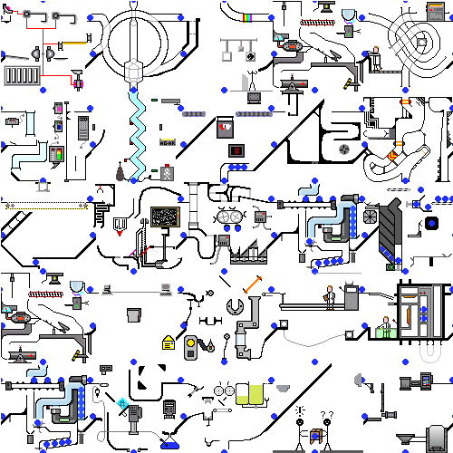

Améliorer la qualité de son code
Mathieu Comandon (@strycore)Pourquoi ?
- Pour éviter de payer une dette technique
- Par respect pour ses collaborateurs
- Par respect pour soi même
- Pour développer plus vite !
- Pour être un bon citoyen du monde Open Source !
Ou sinon...
3 ans plus tard ... ZOMG! WTF!
Adoptez un standard de code
- N'inventez pas le votre
- Utilisez le standard le plus utilisé (Python: PEP8, PHP: PEAR)
- N'essayez pas d'apprendre le standard par coeur, utilisez un validateur !
- Dans votre éditeur de texte ! En temps réel !
Supprimez votre code !
ça pourra servir pour plus tard
Non !
je garde ça au cas où
Non !
mais j'ai passé du temps a écrire ça
Tant pis, c'est la vie.
ce n'est pas moi qui l'ai écrit, je ne peux pas l'effacer
Si !
Moins de code = moins de bugs

Votre code est versionné, n'est ce pas ?
Donner des noms explicites
def foo(a):
lntcf = get_ln_mnf_buf(a) # LOL WUT?
/*
* Overkill class name
*/
public int InternalFrameInternalFrameTitlePaneInternalFrameTitlePaneMaximizeButtonWindowNotFocusedState()
Ne soyez pas ce chat

Pas d'autocomplétion sur votre éditeur ?
Installez un plugin, ou jettez votre éditeur.
(Protip: Vim c'est bien)
Ne réinventez pas la roue
Fuyez le "Not Invented Here"
git clone http://github.com/... : 2 secondes écrire sa propre lib : 2 semaines
votre code n'est pas meilleur que celui de votre voisin (et inversement), partagez, contribuez !
Testez votre code!
Code without tests is broken by design.- Jacob
Frameworks de test
python unittest, PHPUnit, Junit, Jasmine, ...
Mais aussi...
def test_get_answer():
result = get_answer("The universe")
if result != 42:
print "FAIL"
Lancez vos tests souvent
(Très souvent)Toutes les 2 secondes par exemple ?
$ watch make test
Every 2.0s: make test
./manage.py test --failfast --noinput
......
--------------------------------------
Ran 6 tests in 3.318s
OK
Lancez vos tests automatiquement

$ cat .git/hooks/post-commit
#!/bin/bash
git push jenkins master
curl http://ci.strycore.com/git/notifyCommit\?url\=/git/project.git
Vous êtes votre pire enemi
Cela demande plus d'effort de concevoir quelque chose de simple que quelquechose qui est voué a devenir trop compliqué.
K.I.S.S
(Keep It Simple, Stupid)
Il semble que la perfection soit atteinte, non quand il n'y a plus rien à
ajouter mais quand il n'y a plus rien à retrancher
Antoine de Saint-Exupéry
Pensez à votre application, pas à la technique
Votre code n'est pas la pour être une démo de la dernière pratique que
vous avez appris.
(Design Patterns, Programmation Orientée Objet, etc)
ni de la dernière technologie apprise.
Merci !
(Questions? Commentaires? Suggestions? Insultes?)